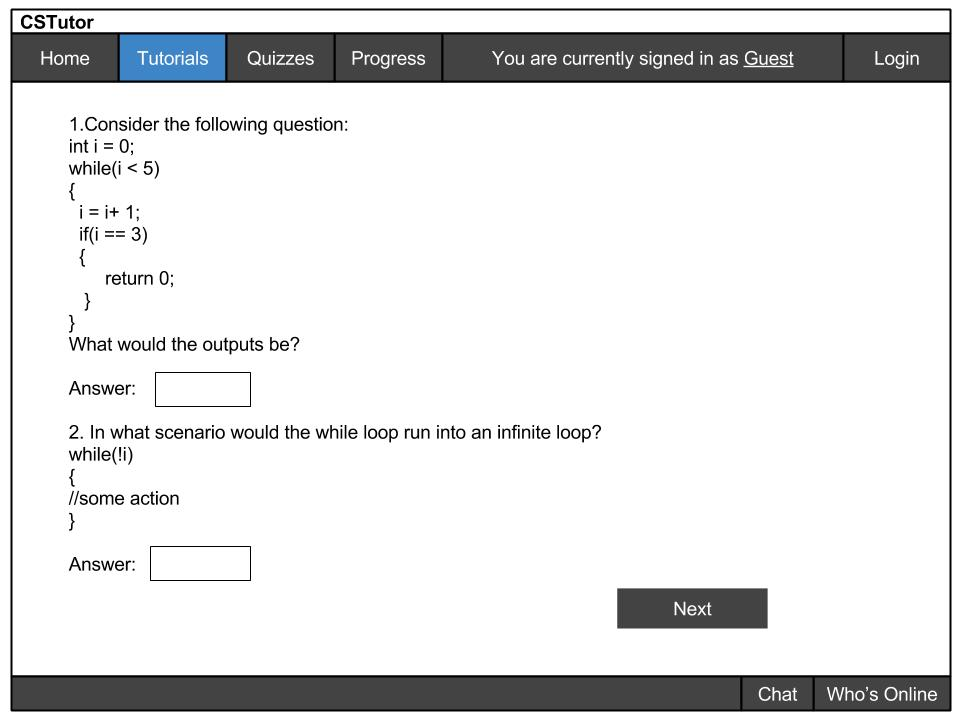
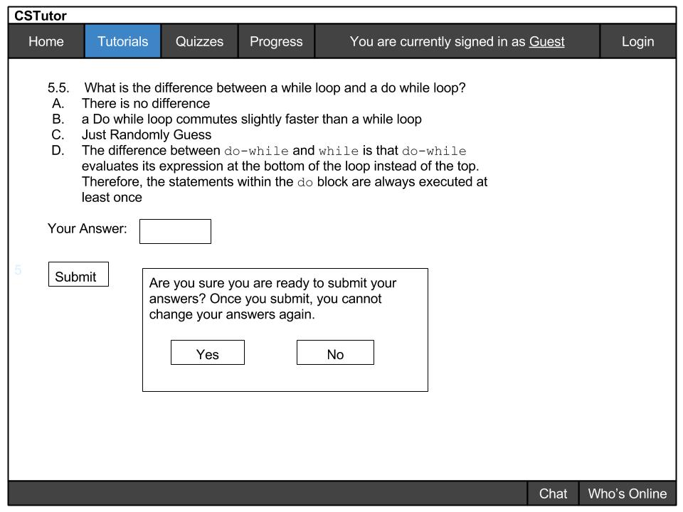

Before a student takes a quiz, the student must finish reading the tutorial before attempting a quiz. Once the student finished reading the tutorial, the student can click "start the quiz" to start taking the quiz:
The button "start the quiz" will take the student to a quiz page similar to the image below, where the students will answer questions in the form of multiple choice, short answer, or fill in sample code.
The button "first page" will take the student back to the first page of the tutorial related to the quiz. This way the student can go over any material that they do not understand.
An example of a CS Tutor quiz will look like this:

For this quiz, the student fills in the answer. The student can then click onto the next page and continue to finish the quiz.
Now, let's say if the student want to submit the quiz, it will look something like this:

Once the student click submit, the dialog will show up and prompt the user again for yes if he has completed the quiz. This is done so that students won't accidentally click submit and regret any question they have or have not answered.